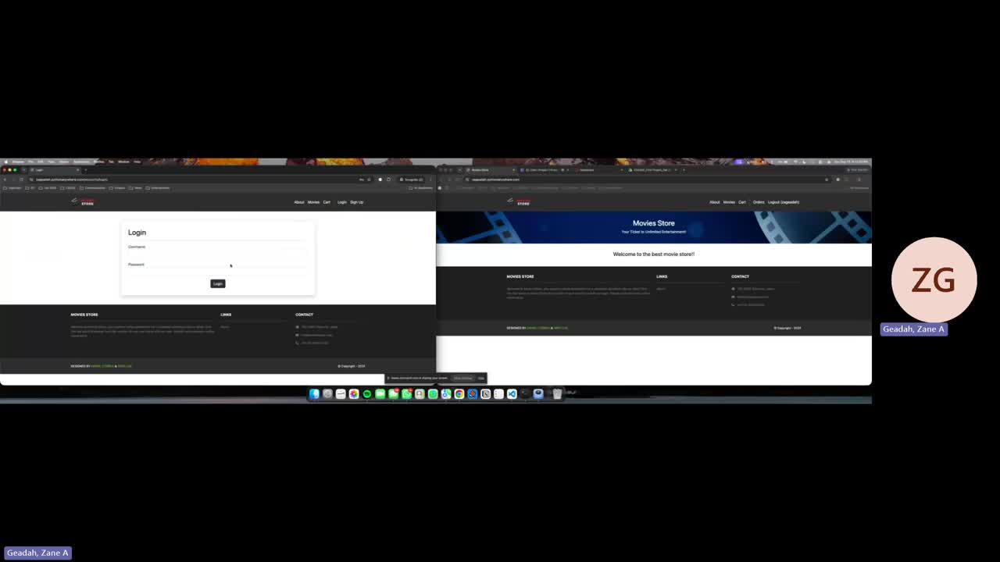

GEORGIA TECH · COMPUTER ENGINEERING
Zane Geadah.
Software. Hardware.
Built with curiosity.
Hi, I’m Zane — a computer engineering student at Georgia Tech who’d rather build the thing than just study it. From Django storefronts to accelerator hardware, I like chasing a project until I understand exactly why it works.
HOW I BUILD
Software. Hardware. Same curiosity.
SOFTWARE
HARDWARE & RESEARCH
SELECTED WORK
Ideas into practice.

SOFTWARE / DJANGO
GT Movies Store
A full-stack movie storefront, plus my development process and video walkthrough.

RESEARCH / HARDWARE
Jefferson Lab
Corrector magnet mounts for the UITF beamline, from design to assembly.
INDEPENDENT PROJECT
GPU mining rig
GPU configuration, cooling, and energy-efficiency analysis.